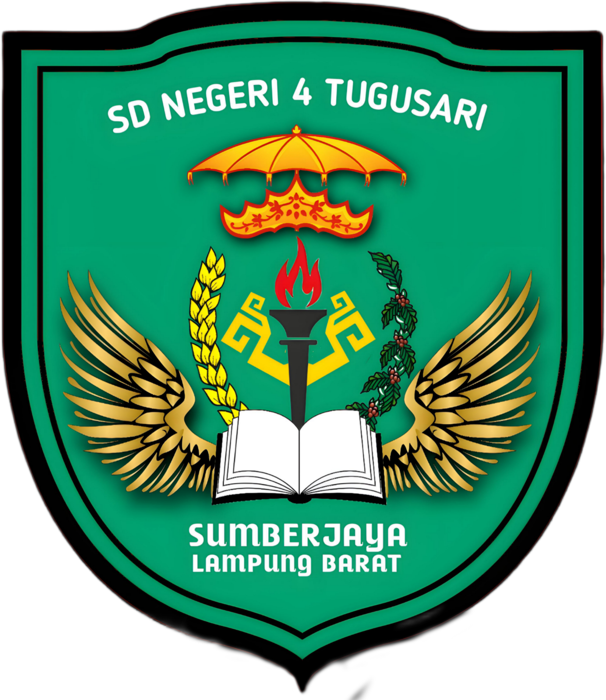

Guru Pengampu: Amir Salim, S.Si.
Belajar memecahkan masalah langkah demi langkah, mengenali pola, dan merancang algoritma seperti komputer.
Menjadi warga digital yang cerdas, menjaga keamanan data, dan berinternet dengan aman serta bertanggung jawab.
Mengenal apa itu AI (Kecerdasan Buatan), cara kerjanya, dan aturan beretika saat menggunakannya.
Memahami kolaborasi hebat antara manusia sebagai pencipta dan AI sebagai asisten untuk membangun masa depan.